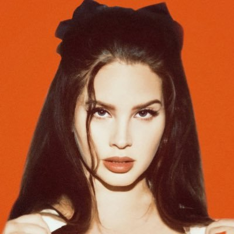
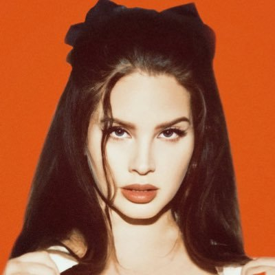
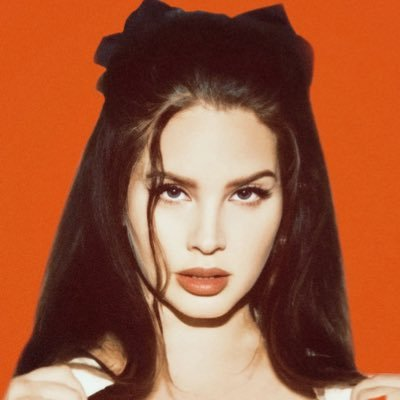
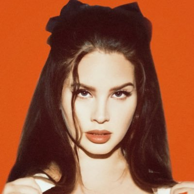

LANA DEL REY
 



Elizabeth Woolridge Grant (21/06/1985), conocida artísticamente como Lana Del Rey, es una cantante,
compositora, modelo, actriz, escritora, productora y poetisa estadounidense.
Su música se distingue por su sofisticada calidad cinematográfica, su estilo retro
y su exploración del romance trágico, el glamur y la melancolía.
Su impacto en la industria musical ha sido reconocido ampliamente. La revista estadounidense
Rolling Stone incluyó a Del Rey en su lista de los 200 mejores cantantes de todos los tiempos
en 2023, mientras que su edición británica la distinguió como la mejor compositora
estadounidense del siglo XXI en el mismo año.
Personalmente, Lana Del Rey representa lo que significa ser mujer, amar, sentir tiene una canción para cada sentimiento y su voz es simplemente angelical. Sus letras comunican su historia y su vida de forma alucinante; es capaz de crear universos con música y sumergir a los oyentes en ellos. Su álbum Norman Fucking Rockwell es mi favorito porque habla sobre amor y encontrar la felicidad en uno mismo; el mensaje que da sobre la felicidad como una mariposa convierte a Happiness is a butterfly en mi canción favorita suya y en una de mis canciones favoritas de todos los tiempos. Por último, Lana Del Rey sentó las bases para el surgimiento de artistas femeninas que hoy en día son estandarte del girly pop, su influencia es innegable no solo en la industria musical sino también en la vida de muchas mujeres como yo.